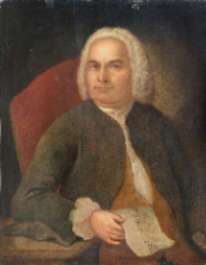
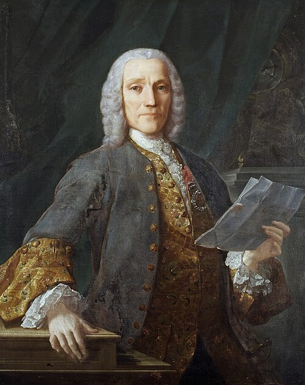
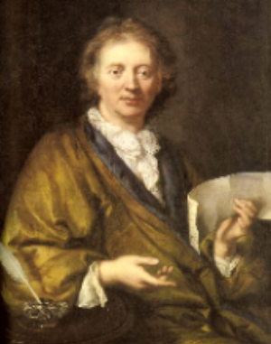
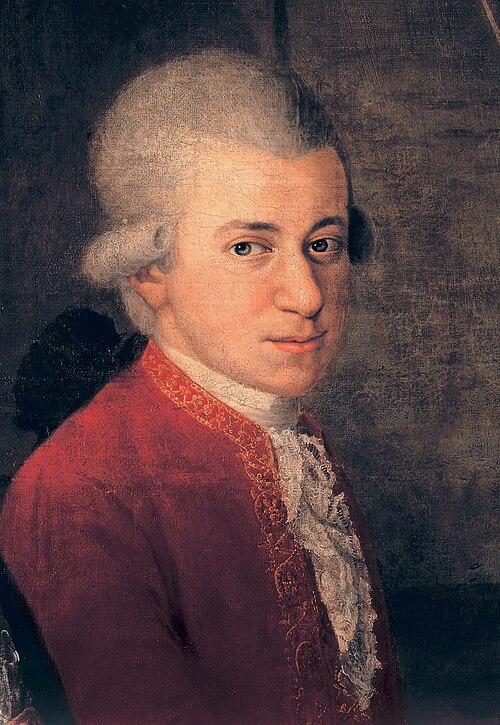
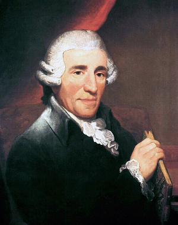
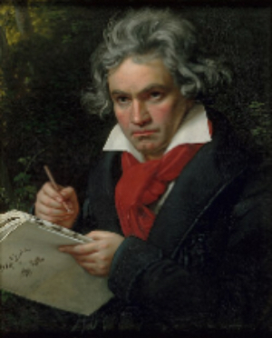
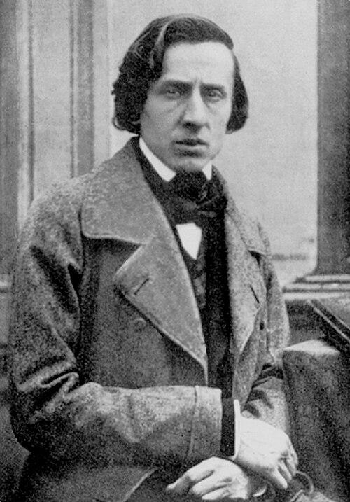
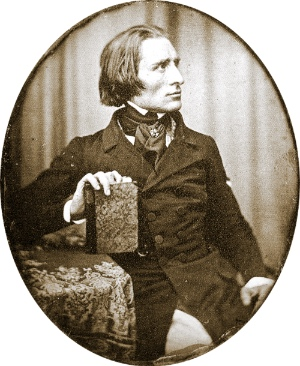
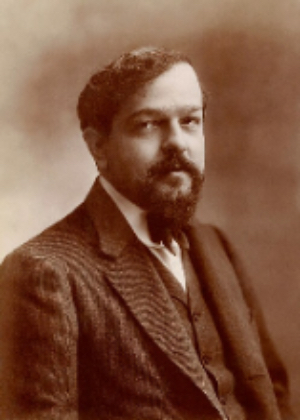
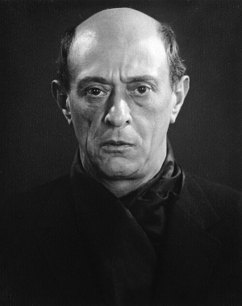

Classical Music Time Periods
Baroque Period (1600-1750)
Throughout records, the baroque period was the start of classical music. This style dominated between 1600 to the 1750. Throughout this period, it was highly emphasized in the use of layering melodies (counterpoint method), and dramatic contrasts with emotions. Although the piano was not invented into the 1700s, many of the harpsichord composition were later adapted to the piano.
Key Composers:
- Johann Sebastian Bach (1685-1750), wrote mostly harpsichord like the Well-Tempered Clavier, Goldberg Variations, or French Suites which have become fundamental pieces for pianist repertoire. Click here to see more of Johann Sebastian Bach works. 
- Domenico Scarlatti (1685-1757), wrote over 500 sonatas for the piano, that were technically demanding, but had this playful emotion. For example, Sonata in G Minor, Sonata in B minor and Sonata in A major. Click here to see more of Domenico Scarlatti works. 
- François Couperin (1668-1733), he wrote beautiful and elegant French harpsichord that was later on adapted to the piano. For example, Les Barricades Mystérieuses and Le tic-toc-choc ou Les maillotins. Click here to see more of François Couperin works. 
Although Johann Sebastian Bach was the most known composer of this time period, but like Scarlatti and Couperin many others have left a strong expression through their works.
Classical Period (1750-1820)
The classical period is the preceding period for the baroque period, on this period they started to value more balance, clarity, and form, rather than just counterpoint method. In this period the piano formerly replaces the harpsichord as the main keyboard instrument and most composers started to write piano sonatas, concertos symphonies.
Key Composers:
- Wolfgang Amadeus Mozart (1756-1791), he is considered as one of the greatest composers of the Classical era, and throughout different type of periods. He most known piano sonata is Piano Sonata in C Major, Symphony No. 40, and Piano Concerto No. 20. Click here to see more of Wolfgang Amadeus Mozart works. 
- Joseph Haydn (1732-1809), was an Austrian composer that mostly develop chamber music like string quartet or piano trios. Some known pieces of his are Piano Sonata No. 62 in E-Flat Major, and Andante with Variations in F minor. Click here to see more works of Joseph Haydn works. 
-
Muzio Clementi (1752-1832), was an Italian and British composer and was most known as the "Father of the Piano," due to his advancement in piano techniques. Some of his most known for his Gradus ad Parnassum, which is a set of 100 diverse piano pieces. Click here to see more works of Muzio Clementi works.

Romantic Period (1820-1900)
This period is one of the most known in present time, due to been the start when composers started to break ways from the norm. On this period, most work have an intense emotional expression like pain, beauty, despair or love. Is also known for its wonderful virtuosity, and the creation of various branches of classical music like rhapsody or nocturne. This is one of the most use period in any instrumental repertoire as it allows musicians to express themselves and evoke emotion towards the audience through different techniques or methods.
Key Composers:
- Ludwig van Beethoven (1770-1827), he was a German composer that eventually when deaf, but he was one of the biggest that bridged between the classical and romantic era. Some of his composition that showcase is the Moonlight Sonata op.27, Piano trio in E-Flat major, and Piano Concerto No. 1. Click here to see more of Ludwig Van Beethoven. 
- Frédéric Chopin (1810-1849), he was a Polish composer and virtuoso pianist. He completely revolutionizes piano playing and composition overall; his pieces are known for its demanding expressiveness and technicality. Some of his well-known pieces are Nocturne in E-Flat major, Polonaise in A-Flat major, and Fantaisie-Impromptu. Click here to see more of Frédéric Chopin works. 
- Franz Liszt (1811-1886), was a Hungarian composer, virtuoso pianist, and teacher. He also revolutionize piano technique, which you can see it works like La Campanella, Hungarian Rhapsodies, and transcendental études. Click here to see more of Franz Liszt works. 
The Modern Period (1900-Present)
Modern period is when composers completely broke the rules of classical music and started experiment with other genres. The piano continues to adapt to new styles and technologies, one of the creations if the MIDI keyboard. Most modern songs parts are composed with piano and later on adapt to synth, string or other instruments.
Key Composers:
- Claude Debussy (1862-1918), was a French composer most known for the suite bergamasque and especially the Clair de Lune section which was inspired by a poem. Some of his other works are La mer, Children's Corner, and Petite Suite. Click here to see more of Claude Debussy works. 
-
Sergei Rachmaninoff (1873-1943), was a Russian composer that was heavily inspired by the romantic period but used more revolutionized techniques for his concertos. For example, Piano Concerto No. 2, Prelude in C-sharp minor and The Bells. Click here to see more of Sergei Rachmaninoff works.

- Arnold Schoenberg (1874-1951), was an Austrian composer who developed the twelve-tone technique, and abandon traditional harmony. His piano works like Six Little Piano Pieces and Suite for Piano completely breaks away from tonal music. Click here to see more of Arnold Schoenberg works. 
The Modern period also encompass pop, rock, R&B, and other genres, while it deviates from classical traditions, we often see techniques derived from centuries of musical development.